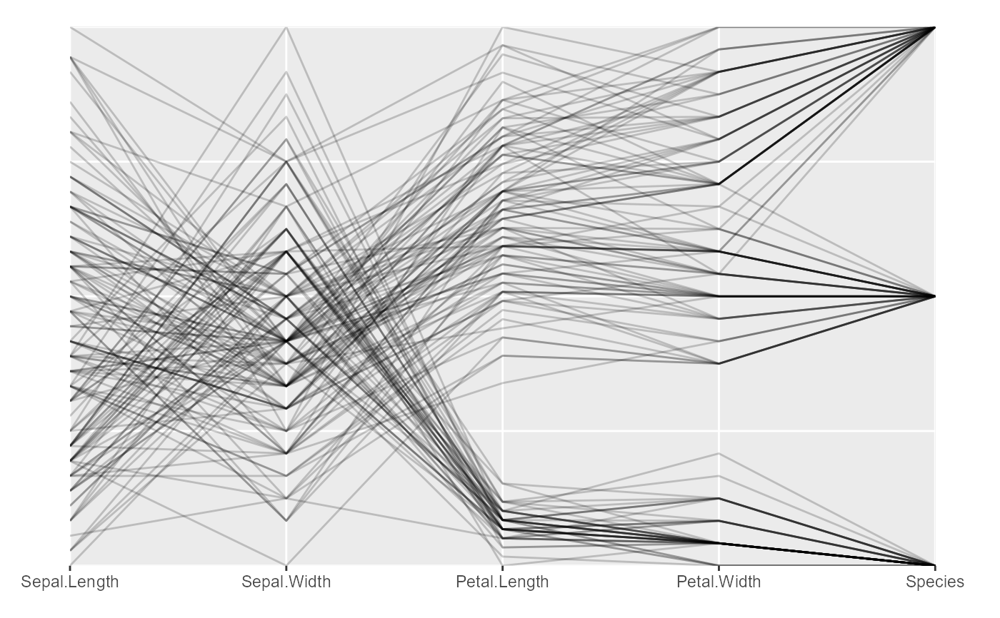
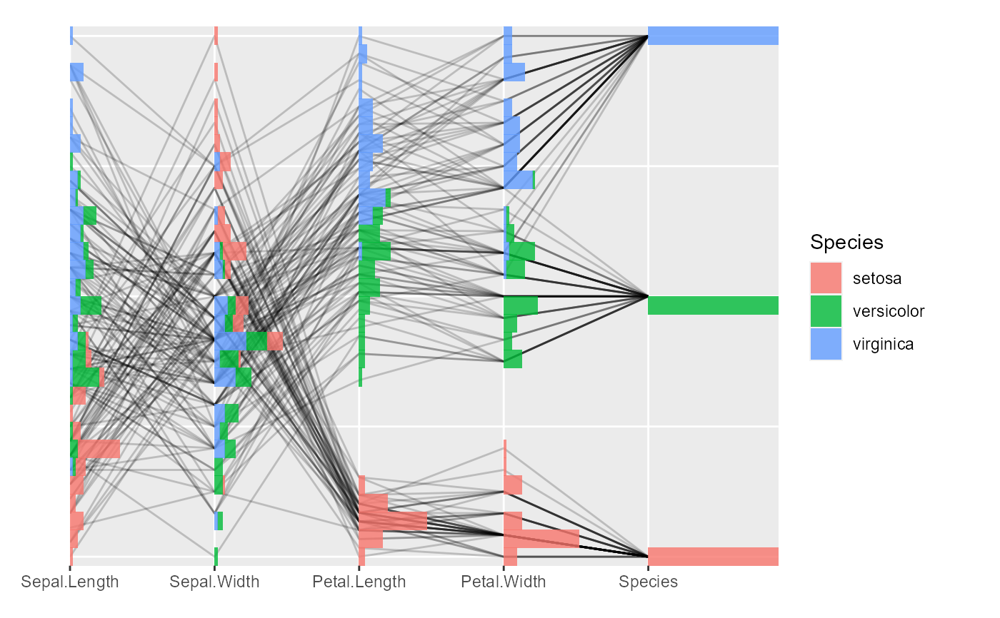
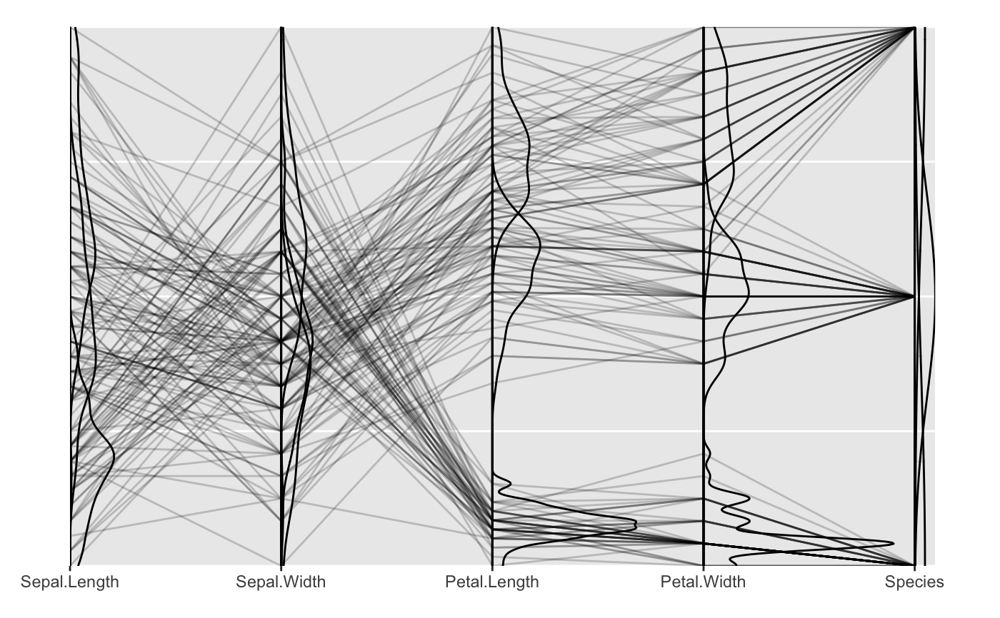
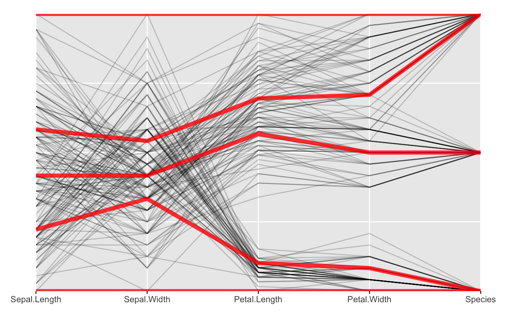
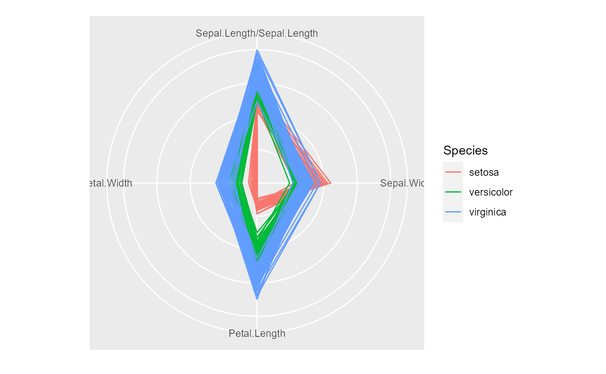

coord_serialaxes.RdIt is mainly used to visualize the high dimensional data set either on the parallel coordinate or the radial coordinate.
coord_serialaxes( axes.layout = c("parallel", "radial"), scaling = c("data", "variable", "observation", "none"), axes.sequence = character(0L), positive = TRUE, ... )
| axes.layout | Serial axes layout, either "parallel" or "radial". |
|---|---|
| scaling | One of |
| axes.sequence | A vector with variable names that defines the axes sequence. |
| positive | If |
| ... | other arguments used to modify layers |
a ggproto object
Serial axes coordinate system (parallel or radial) is different from the
Cartesian coordinate system or its transformed system (say polar in ggplot2)
since it does not have a formal transformation
(i.e. in polar coordinate system, "x = rcos(theta)", "y = rsin(theta)").
In serial axes coordinate system, mapping aesthetics does not really require "x" or "y". Any "non-aesthetics"
components passed in the mapping system will be treated as an individual axis.
To project a common geom layer on such serialaxes,
users can customize function add_serialaxes_layers.
# set sequence by `axes.sequence` p <- ggplot(iris) + geom_path(alpha = 0.2) + coord_serialaxes(axes.sequence = colnames(iris)) # an 'iris' parallel coordinate plot. p# histogram layer (parallel coord) p + geom_histogram(alpha = 0.8, mapping = aes(fill = Species))#># density layer p + geom_density(alpha = 0.8)# radial axes # set sequence in `mapping` ggplot(iris, mapping = aes( Sepal.Length = Sepal.Length, Sepal.Width = Sepal.Width, Petal.Length = Petal.Length, Petal.Width = Petal.Width, colour = Species )) + geom_path() + coord_serialaxes(axes.layout = "radial")